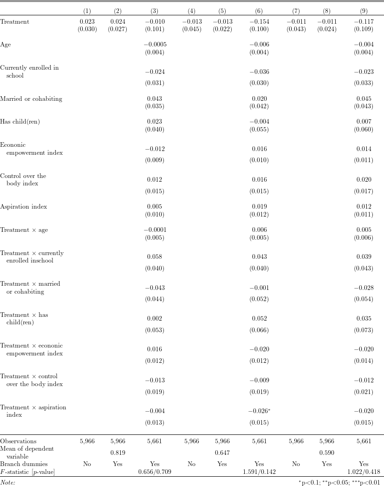

To read the created .tex file, the following \(\LaTeX\) packages are required:
# Install and load packages ---------------
packages <- c(
"tidyverse",
"haven",
"lfe",
"broom",
"stargazer",
"kableExtra",
"magrittr"
)
pacman::p_load(packages, character.only = TRUE, install = TRUE)
# Load an example dataset ---------------
data <- read_dta("Bandiera2020_replication/ELA.dta")
data <- data %>%
mutate(
follow_endline = ifelse(
follow_up == 1 & endline == 1, 1, 0
)
)# RHS variables
var_list_lin <- c(
"age", "E_Denrolled", "partner","M_children",
"igaALL", "control_bodyALL", "aspirationALL"
)
var_list <- c(var_list_lin, paste0(var_list_lin, ":treatment"))
# variable labels
var_label <- c(
"Treatment",
"Age",
"\\makecell[l]{Currently enrolled in\\\\\\hspace{1em}school}",
"Married or cohabiting", "Has child(ren)",
"\\makecell[l]{Econonic\\\\\\hspace{1em}empowerment index}",
"\\makecell[l]{Control over the\\\\\\hspace{1em}body index}",
"Aspiration index",
"Treatment $\\times$ age",
"\\makecell[l]{Treatment $\\times$ currently\\\\\\hspace{1em}enrolled inschool}",
"\\makecell[l]{Treatment $\\times$ married\\\\\\hspace{1em}or cohabiting}",
"\\makecell[l]{Treatment $\\times$ has\\\\\\hspace{1em}child(ren)}",
"\\makecell[l]{Treatment $\\times$ econonic\\\\\\hspace{1em}empowerment index}",
"\\makecell[l]{Treatment $\\times$ control\\\\\\hspace{1em}over the body index}",
"\\makecell[l]{Treatment $\\times$ aspiration\\\\\\hspace{1em}index}"
)
# outcome variables
outcome_list <- c(
rep("follow_up", 3),
rep("endline", 3),
rep("follow_endline", 3)
)
# list of control variables
control_list <- vector(mode = "list", length = length(outcome_list))
for (i in c(3, 6, 9)) {
control_list[[i]] <- var_list
}
# fixed effects used in each regression
fe_list <- rep(c("0", "branch_name", "branch_name"), 3)
# regression results
reg_res <- pmap(
list(outcome_list, control_list, fe_list),
function(outcome, control, fe) felm(
as.formula(
paste0(
outcome,
"~ ", paste0(c("treatment", control), collapse = " + "),
"| ", fe, " | 0 | villid"
)
),
data = data
)
)
# mean of outcome variables
mean_dep <- pmap_chr(
list(outcome_list, reg_res, seq(9)),
function(x, y, z) ifelse(
z %in% c(2, 5, 8),
formatC(colMeans(model.frame(y)[x], na.rm = TRUE), digits = 3, format = "f"),
""
)
)
branch_dummies <- rep(c("No", "Yes", "Yes"), 3)
# F-test that all interactions have 0 coefficients
fstat_list <- c()
for (i in seq(length(outcome_list))) {
if (i %in% c(3, 6, 9)) {
test_res <- waldtest(reg_res[[i]], paste0("treatment:", var_list_lin))[c("F", "p.F")] %>%
formatC(digits = 3, format = "f") %>%
paste0(collapse = "/")
fstat_list <- c(fstat_list, test_res)
} else {
fstat_list <- c(fstat_list, " ")
}
}
# table output
reg_res %>%
stargazer(
dep.var.labels.include = FALSE,
covariate.labels = var_label,
keep = c("treatment", var_list),
add.lines = list(
c("\\makecell[l]{Mean of dependent\\\\\\hspace{1em}variable}", mean_dep),
c("Branch dummies", branch_dummies),
c("$F$-statistic [$p$-value]", fstat_list)
),
title = "",
type = "latex",
out = "tex/Bandiera2020_table2_replicate.tex",
omit.stat = c("adj.rsq", "rsq", "ser"),
table.layout = "=#c-t-sa-n",
digits = 3
)